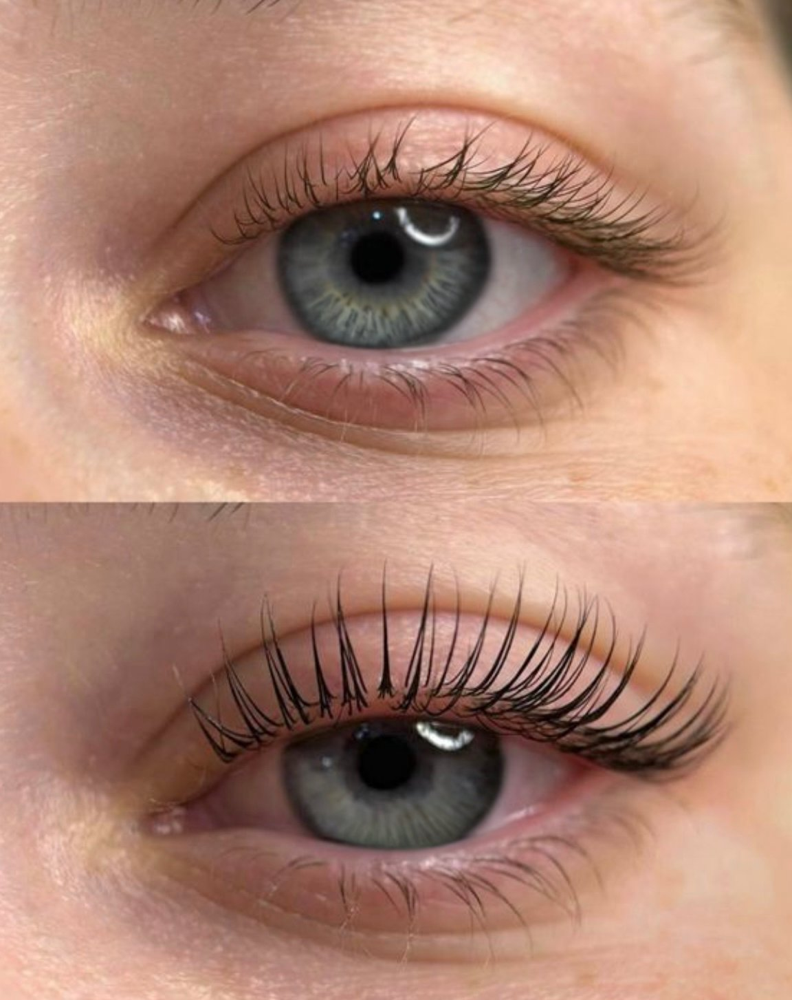

Korejska laminacija trepalnic v Mariboru: komu ustreza, kako poteka in koliko zdrži
Korean lash lamination in Maribor: who it suits, how it works and how long it lasts
Корейское ламинирование ресниц в Мариборе: кому подходит, как проходит и сколько держится
Корейське ламування вій у Мариборі: кому підходить, як проходить і скільки тримається
Laminacija trepalnic je tretma, ki naravne trepalnice dvigne, lepo oblikuje in naredi pogled bolj odprt — brez podaljševanja in brez vsakodnevnega zvijanja s kleščami. V studiu uporabljam korejsko laminacijo trepalnic — nežno tehniko, ki trepalnice dvigne, oblikuje in hkrati neguje. V tem članku ti razložim, komu je namenjena, kako poteka in kako poskrbeti, da bo učinek čim dlje viden.
Lash lamination is a treatment that lifts and shapes your natural lashes and makes the eyes look more open — without extensions and without daily curling. In the studio I use Korean lash lamination — a gentle technique that lifts, shapes and at the same time cares for the lashes. In this article I explain who it is for, how it works and how to make the effect last as long as possible.
Ламинирование ресниц — процедура, которая поднимает и формирует натуральные ресницы и делает взгляд более открытым — без наращивания и без ежедневного закручивания щипцами. В студии я использую корейское ламинирование ресниц — бережную технику, которая поднимает, формирует и одновременно ухаживает за ресницами. В этой статье расскажу, кому оно подходит, как проходит и как сделать эффект максимально долгим.
Ламування вій — процедура, яка піднімає й формує натуральні вії та робить погляд більш відкритим — без нарощування й без щоденного закручування щипцями. У студії я використовую корейське ламування вій — делікатну техніку, яка піднімає, формує й водночас доглядає за віями. У цій статті розповім, кому воно підходить, як проходить і як зробити ефект максимально тривалим.

Kaj je laminacija trepalnic?
What is lash lamination?
Что такое ламинирование ресниц?
Що таке ламування вій?
Laminacija je postopek, pri katerem se naravne trepalnice oblikujejo in utrdijo v dvignjeni obliki. Uporabijo se posebni preparati, ki trepalnice rahlo zavijejo in jim dajo videz večje dolžine in gostote. Ne gre za podaljševanje — tvoje trepalnice ostanejo tvoje, le lepše oblikovane. Korejska tehnika je še posebej nežna: trepalnice oblikuje postopoma, z ustreznimi preparati in dovolj časa za vsak korak.
Lamination is a procedure in which natural lashes are shaped and fixed in a lifted position. Special products gently curl the lashes and give them the look of greater length and density. It is not an extension — your lashes remain yours, only better shaped. The Korean technique is especially gentle: it shapes the lashes gradually, with suitable products and enough time for each step.
Ламинирование — процедура, при которой натуральные ресницы формируются и фиксируются в поднятом положении. Специальные составы мягко подкручивают ресницы и придают им вид большей длины и густоты. Это не наращивание — твои ресницы остаются твоими, просто более красивой формы. Корейская техника особенно бережная: ресницы формируются постепенно, с подходящими составами и достаточным временем для каждого этапа.
Ламування — процедура, під час якої натуральні вії формуються й фіксуються в піднятому положенні. Спеціальні склади м'яко підкручують вії та надають їм вигляду більшої довжини й густоти. Це не нарощування — твої вії залишаються твоїми, лише красивішої форми. Корейська техніка особливо делікатна: вії формуються поступово, з відповідними складами й достатнім часом для кожного етапу.
Komu je laminacija primerna?
Who is lamination suitable for?
Кому подходит ламинирование?
Кому підходить ламування?
Laminacija je dobra izbira, če:
Lamination is a good choice if:
Ламинирование — хороший выбор, если:
Ламування — хороший вибір, якщо:
- so tvoje trepalnice ravne in se hitro spustijo,
- si želiš bolj odprt pogled brez vsakodnevnega ličenja,
- nosiš očala ali kontaktne leče in iščeš praktično rešitev,
- si želiš naraven videz tudi na dopustu, po treningu ali na poroki.
- your lashes are straight and drop quickly,
- you want a more open look without daily makeup,
- you wear glasses or contact lenses and want a practical solution,
- you want a natural look on holiday, after a workout or at a wedding.
- твои ресницы прямые и быстро опускаются,
- хочется более открытого взгляда без ежедневного макияжа,
- носишь очки или контактные линзы и ищешь практичное решение,
- хочешь естественный вид на отдыхе, после тренировки или на свадьбе.
- твої вії прямі й швидко опускаються,
- хочеться більш відкритого погляду без щоденного макіяжу,
- носиш очки або контактні лінзи й шукаєш практичне рішення,
- хочеш природний вигляд на відпочинку, після тренування або на весіллі.
Ni pa priporočljiva pri vnetih očeh, poškodovanih trepalnicah ali takoj po prejšnjem tretmaju — trepalnice potrebujejo čas za regeneracijo. Če nisi prepričana, se pred tretmajem pogovoriva in pregledava stanje trepalnic.
It is not recommended for inflamed eyes, damaged lashes or immediately after a previous treatment — lashes need time to recover. If you are unsure, we will talk before the treatment and assess the condition of your lashes.
Но оно не рекомендуется при воспалённых глазах, повреждённых ресницах или сразу после предыдущей процедуры — ресницам нужно время на восстановление. Если сомневаешься, перед процедурой мы поговорим и оценим состояние ресниц.
Але воно не рекомендується при запалених очах, пошкоджених віях або одразу після попередньої процедури — віям потрібен час на відновлення. Якщо сумніваєшся, перед процедурою ми поговоримо й оцінимо стан вій.
Ali laminacija škoduje trepalnicam?
Does lamination damage the lashes?
Вредит ли ламинирование ресницам?
Чи шкодить ламування віям?
Pravilno izvedena laminacija ne poškoduje trepalnic. Pomembni so kakovostni preparati, pravilna tehnika in nega po tretmaju. Redno česanje, serum ali olje za trepalnice ter pavza 4–6 tednov med tretmaji pomagajo ohranjati trepalnice močne in zdrave. Nega je del tretmaja — pokažem ti, kako skrbeti za trepalnice doma, da bo učinek lepši in dlje viden. Po potrebi naredimo tudi korekcijo oblike, ko trepalnice odrastejo.
Correctly performed lamination does not damage the lashes. Quality products, proper technique and aftercare matter. Regular brushing, a lash serum or oil and a 4–6 week break between treatments help keep the lashes strong and healthy. Aftercare is part of the treatment — I show you how to care for your lashes at home so the effect looks better and lasts longer. If needed, we also do a shape correction when the lashes grow out.
Правильно выполненное ламинирование не повреждает ресницы. Важны качественные составы, правильная техника и уход после процедуры. Регулярное расчёсывание, сыворотка или масло для ресниц и перерыв 4–6 недель между процедурами помогают сохранять ресницы крепкими и здоровыми. Уход — часть процедуры: я покажу, как заботиться о ресницах дома, чтобы эффект был красивее и держался дольше. При необходимости делаем и коррекцию формы, когда ресницы отрастают.
Правильно виконане ламування не пошкоджує вії. Важливі якісні склади, правильна техніка й догляд після процедури. Регулярне розчісування, сироватка або олія для вій і перерва 4–6 тижнів між процедурами допомагають зберігати вії міцними й здоровими. Догляд — частина процедури: я покажу, як доглядати за віями вдома, щоб ефект був красивішим і тримався довше. За потреби робимо й корекцію форми, коли вії відростають.
Kako poteka tretma?
How does the treatment work?
Как проходит процедура?
Як проходить процедура?
Tretma traja približno 60 minut in poteka v mirnem, sproščenem vzdušju:
The treatment takes about 60 minutes in a calm, relaxed atmosphere:
Процедура длится около 60 минут и проходит в спокойной, расслабленной атмосфере:
Процедура триває близько 60 хвилин і проходить у спокійній, розслабленій атмосфері:
- Posvet in pregled trepalnic — pogledava obliko, stanje in želeni učinek.
- Čiščenje in priprava — trepalnice očistim in pripravim na nanos.
- Nanos preparatov in oblikovanje — trepalnice dvignem in oblikujem.
- Barvanje (po želji) — če želiš še bolj izrazit pogled.
- Nega in nasveti — pokažem ti, kako skrbeti za učinek doma.
- Consultation and lash assessment — we look at the shape, condition and desired effect.
- Cleansing and preparation — I clean and prepare the lashes.
- Application of products and shaping — I lift and shape the lashes.
- Tinting (optional) — if you want a more expressive look.
- Aftercare and advice — I show you how to care for the effect at home.
- Консультация и осмотр ресниц — смотрим форму, состояние и желаемый эффект.
- Очищение и подготовка — очищаю и подготавливаю ресницы.
- Нанесение составов и формирование — поднимаю и формирую ресницы.
- Окрашивание (по желанию) — если хочется более выразительного взгляда.
- Уход и рекомендации — показываю, как ухаживать за эффектом дома.
- Консультація й огляд вій — дивимося форму, стан і бажаний ефект.
- Очищення й підготовка — очищаю та готую вії.
- Нанесення складів і формування — піднімаю й формую вії.
- Фарбування (за бажанням) — якщо хочеться виразнішого погляду.
- Догляд і рекомендації — показую, як доглядати за ефектом удома.

Koliko časa zdrži in kako skrbeti?
How long does it last and how should I care for it?
Сколько держится и как ухаживать?
Скільки тримається і як доглядати?
Učinek običajno zdrži 4–6 tednov, odvisno od rasti trepalnic in nege. Prvih 24 ur se izogibaj vodi, pari in močnemu trenju. Vsak dan jih nežno prečeši s krtačko in uporabljaj serum ali olje za trepalnice. Oljnim čistilom okoli oči se izogibaj, če ti niso posebej priporočena.
The effect usually lasts 4–6 weeks, depending on lash growth and care. For the first 24 hours avoid water, steam and strong rubbing. Brush them gently every day and use a lash serum or oil. Avoid oil-based cleansers around the eyes unless specifically recommended.
Эффект обычно держится 4–6 недель, в зависимости от роста ресниц и ухода. Первые 24 часа избегай воды, пара и сильного трения. Каждый день мягко расчёсывай ресницы щёточкой и используй сыворотку или масло для ресниц. Избегай масляных средств вокруг глаз, если они не рекомендованы специально.
Ефект зазвичай тримається 4–6 тижнів, залежно від росту вій і догляду. Перші 24 години уникай води, пари й сильного тертя. Щодня м'яко розчісуй вії щіточкою та використовуй сироватку або олію для вій. Уникай олійних засобів навколо очей, якщо вони не рекомендовані спеціально.
Korejska laminacija trepalnic v Mariboru
Korean lash lamination in Maribor
Корейское ламинирование ресниц в Мариборе
Корейське ламування вій у Мариборі
Tretma izvajam v studiu na Vodnikovem trgu 1 v Mariboru. Izvajam korejsko laminacijo trepalnic in korekcijo oblike. Cena laminacije trepalnic je 48 €, tretma traja približno 60 minut. Termin rezerviraš prek spletne strani ali WhatsAppa — z veseljem ti pomagam izbrati termin, ki ti ustreza.
I perform the treatment in the studio at Vodnikov trg 1 in Maribor. I offer Korean lash lamination and shape correction. The price of lash lamination is €48, and the treatment takes about 60 minutes. Book your appointment via the website or WhatsApp — I will be happy to help you find a time that suits you.
Процедуру провожу в студии на Водниковой площади 1 в Мариборе. Делаю корейское ламинирование ресниц и коррекцию формы. Цена ламинирования ресниц — 48 €, процедура длится около 60 минут. Записаться можно через сайт или WhatsApp — с радостью помогу выбрать удобное время.
Процедуру проводжу в студії на Водниковій площі 1 у Мариборі. Роблю корейське ламування вій і корекцію форми. Ціна ламування вій — 48 €, процедура триває близько 60 хвилин. Записатися можна через сайт або WhatsApp — із радістю допоможу вибрати зручний час.
Več o vseh storitvah najdeš na strani Storitve, moje delo pa v galeriji.
You can find all services on the Services page and my work in the gallery.
Все услуги — на странице Услуги, мои работы — в галерее.
Усі послуги — на сторінці Послуги, мої роботи — у галереї.
Pogosta vprašanja
Frequently asked questions
Частые вопросы
Часті питання
Ali laminacija škoduje trepalnicam?
Does lamination damage the lashes?
Вредит ли ламинирование ресницам?
Чи шкодить ламування віям?
Ne, če je izvedena pravilno in z ustreznimi preparati. Pomembna je tudi nega po tretmaju — česanje, serum ali olje in pavza med tretmaji.
No, if it is performed correctly with suitable products. Aftercare also matters — brushing, serum or oil and a break between treatments.
Нет, если процедура выполнена правильно и с подходящими составами. Важен и уход после — расчёсывание, сыворотка или масло и перерыв между процедурами.
Ні, якщо процедура виконана правильно й з відповідними складами. Важливий і догляд після — розчісування, сироватка або олія та перерва між процедурами.
Ali je tretma boleč?
Is the treatment painful?
Процедура болезненная?
Процедура болюча?
Ne. Postopek je brez bolečin; občutiš le rahel dotik in toploto.
No. The procedure is painless; you only feel a light touch and warmth.
Нет. Процедура безболезненная; чувствуется только лёгкое прикосновение и тепло.
Ні. Процедура безболісна; відчувається лише легкий дотик і тепло.
Ali lahko po tretmaju nosim maskaro?
Can I wear mascara after the treatment?
Можно ли носить тушь после процедуры?
Чи можна носити туш після процедури?
Prvih 24 ur ne. Potem lahko, vendar priporočam čim manj — naravni učinek je že dovolj izrazit.
Not for the first 24 hours. After that you can, but I recommend as little as possible — the natural effect is already noticeable.
Первые 24 часа — нет. Потом можно, но рекомендую по минимуму — естественный эффект уже достаточно выразительный.
Перші 24 години — ні. Потім можна, але рекомендую по мінімуму — природний ефект уже достатньо виразний.
Kako pogosto lahko ponovim laminacijo?
How often can I repeat lamination?
Как часто можно повторять ламинирование?
Як часто можна повторювати ламування?
Na 4–6 tednov, ko trepalnice odrastejo in se učinek sprosti.
Every 4–6 weeks, when the lashes grow out and the effect fades.
Каждые 4–6 недель, когда ресницы отрастают и эффект спадает.
Кожні 4–6 тижнів, коли вії відростають і ефект спадає.
Ali je primerna za občutljive oči?
Is it suitable for sensitive eyes?
Подходит ли для чувствительных глаз?
Чи підходить для чутливих очей?
Povej mi o morebitnih alergijah ali občutljivosti; skupaj presodiva, ali je tretma primeren.
Tell me about any allergies or sensitivity; we will decide together whether the treatment is suitable.
Расскажи об аллергиях или чувствительности; вместе решим, подходит ли процедура.
Розкажи про алергії або чутливість; разом вирішимо, чи підходить процедура.
Želiš lep, odprt pogled brez vsakodnevnega truda?
Want a beautiful, open look without daily effort?
Хочешь красивый открытый взгляд без ежедневных усилий?
Хочеш красивий відкритий погляд без щоденних зусиль?
Rezerviraj termin za korejsko laminacijo trepalnic v Mariboru.
Book an appointment for Korean lash lamination in Maribor.
Запишись на корейское ламинирование ресниц в Мариборе.
Запишись на корейське ламування вій у Мариборі.
Rezerviraj termin Book appointment ЗаписатьсяЗаписатисяКорейське ламування вій у Мариборі: кому підходить, як проходить і скільки тримається
Ламування вій — процедура, яка піднімає й формує натуральні вії та робить погляд більш відкритим — без нарощування й без щоденного закручування щипцями. У студії я використовую корейське ламування вій — делікатну техніку, яка піднімає, формує й водночас доглядає за віями. У цій статті розповім, кому воно підходить, як проходить і як зробити ефект максимально тривалим.
Що таке ламування вій?
Ламування — процедура, під час якої натуральні вії формуються й фіксуються в піднятому положенні. Спеціальні склади м'яко підкручують вії та надають їм вигляду більшої довжини й густоти. Це не нарощування — твої вії залишаються твоїми, лише красивішої форми. Корейська техніка особливо делікатна: вії формуються поступово, з відповідними складами й достатнім часом для кожного етапу.
Кому підходить ламування?
Ламування — хороший вибір, якщо:
- твої вії прямі й швидко опускаються,
- хочеться більш відкритого погляду без щоденного макіяжу,
- носиш очки або контактні лінзи й шукаєш практичне рішення,
- хочеш природний вигляд на відпочинку, після тренування або на весіллі.
Але воно не рекомендується при запалених очах, пошкоджених віях або одразу після попередньої процедури — віям потрібен час на відновлення. Якщо сумніваєшся, перед процедурою ми поговоримо й оцінимо стан вій.
Чи шкодить ламування віям?
Правильно виконане ламування не пошкоджує вії. Важливі якісні склади, правильна техніка й догляд після процедури. Регулярне розчісування, сироватка або олія для вій і перерва 4–6 тижнів між процедурами допомагають зберігати вії міцними й здоровими. Догляд — частина процедури: я покажу, як доглядати за віями вдома, щоб ефект був красивішим і тримався довше. За потреби робимо й корекцію форми, коли вії відростають.
Як проходить процедура?
Процедура триває близько 60 хвилин і проходить у спокійній, розслабленій атмосфері:
- Консультація й огляд вій — дивимося форму, стан і бажаний ефект.
- Очищення й підготовка — очищаю та готую вії.
- Нанесення складів і формування — піднімаю й формую вії.
- Фарбування (за бажанням) — якщо хочеться виразнішого погляду.
- Догляд і рекомендації — показую, як доглядати за ефектом удома.
Скільки тримається і як доглядати?
Ефект зазвичай тримається 4–6 тижнів, залежно від росту вій і догляду. Перші 24 години уникай води, пари й сильного тертя. Щодня м'яко розчісуй вії щіточкою та використовуй сироватку або олію для вій. Уникай олійних засобів навколо очей, якщо вони не рекомендовані спеціально.
Корейське ламування вій у Мариборі
Процедуру проводжу в студії на Водниковій площі 1 у Мариборі. Роблю корейське ламування вій і корекцію форми. Ціна ламування вій — 48 €, процедура триває близько 60 хвилин. Записатися можна через сайт або WhatsApp — із радістю допоможу вибрати зручний час.
Усі послуги — на сторінці Послуги, мої роботи — у галереї.
Часті питання
Чи шкодить ламування віям?
Ні, якщо процедура виконана правильно й з відповідними складами. Важливий і догляд після — розчісування, сироватка або олія та перерва між процедурами.
Процедура болюча?
Ні. Процедура безболісна; відчувається лише легкий дотик і тепло.
Чи можна носити туш після процедури?
Перші 24 години — ні. Потім можна, але рекомендую по мінімуму — природний ефект уже достатньо виразний.
Як часто можна повторювати ламування?
Кожні 4–6 тижнів, коли вії відростають і ефект спадає.
Чи підходить для чутливих очей?
Розкажи про алергії або чутливість; разом вирішимо, чи підходить процедура.
Хочеш красивий відкритий погляд без щоденних зусиль?
Запишись на корейське ламування вій у Мариборі.
Записатися